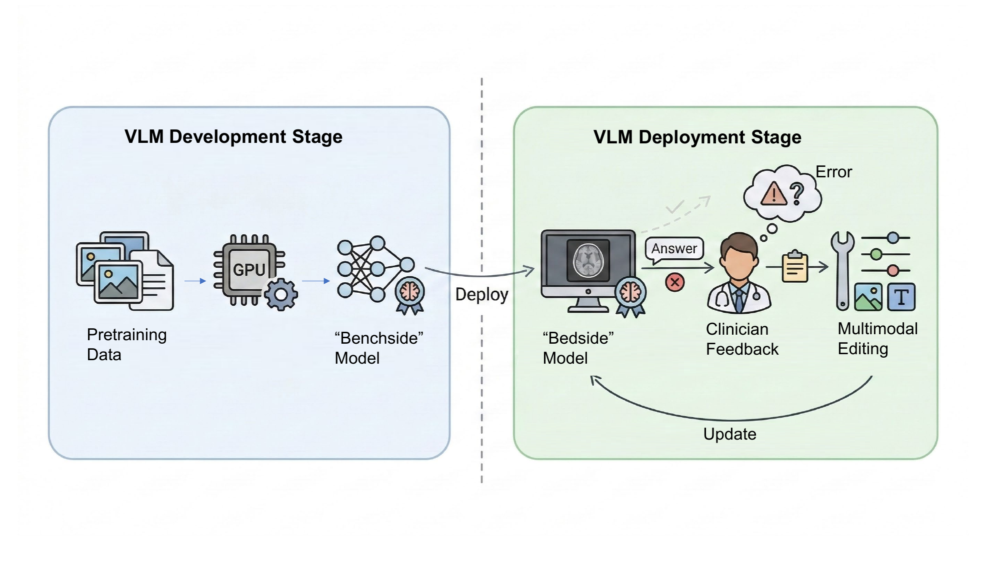

Post-deployment workflow of medical VLM model editing with clinician-in-the-loop feedback: targeted edits correct specific errors while preserving existing model behavior.
医疗 VLM 模型编辑的部署后流程示意：临床医生反馈参与其中，目标性编辑在保持模型原有行为的同时纠正特定错误。
Evaluating and Understanding Model Editing for Medical Vision Language Models (M³Bench)
European Conference on Computer Vision (ECCV) 2026 Accepted
A representative project on trustworthy model editing and evaluation for medical multimodal vision-language models — one strand of my broader interests in multimodal foundation models and trustworthy AI.
Abstract
Model editing promises a fast, targeted way to correct post-deployment mistakes in medical vision-language models (VLMs) without costly retraining. However, existing multimodal model editing benchmarks focus on general-purpose tasks and do not reflect realistic clinical domain requirements and variability. To address this, we introduce M³Bench, a clinically grounded benchmark for multimodal model editing that evaluates whether an edit remains reliable, precise and generalizable under the challenges of image and text variation, modality and protocol shifts, clinical knowledge composition, and temporal progression. M³Bench contains 16,276 questions spanning diverse anatomy, modalities, and specialties, and supports both single and sequential edits. Evaluating 4 representative editors across 4 medical VLMs, we find that no method excels across all criteria: gradient-based editors achieve strong transfer but suffer from catastrophic locality violations, whereas memory-based methods preserve locality but lack compositional generality and exhibit high backbone-dependent hyperparameter sensitivity. We further attribute these failures to the latent space geometry of VLMs and how different editing methods shift its landscape. Overall, M³Bench establishes a rigorous clinical stress test for multimodal model editing and offers actionable guidance for safer post-deployment adaptation.
模型编辑（Model Editing）有望成为一种快速、有针对性的方法，用于在无需高成本重新训练的情况下纠正医疗视觉语言模型（VLMs）在部署后出现的错误。然而，现有的多模态模型编辑基准大多面向通用任务，未能充分反映真实临床场景下的领域需求与多样性。为此，我们提出了 M³Bench——一个具有临床意义的多模态模型编辑评测基准，用于评估编辑是否在图像与文本变化、模态与采集协议迁移、临床知识组合，以及时间维度演变等挑战下，依然保持可靠、精确且可泛化。M³Bench 涵盖 16,276 个问题，覆盖多种解剖结构、影像模态与临床专科，并同时支持单次编辑与序列编辑设置。我们在 4 个代表性编辑方法与 4 个医疗 VLM 上进行了系统评测，发现没有任何一种方法能够在所有评测维度上全面占优：基于梯度的编辑方法具有较强的泛化能力，但容易出现严重的局部性破坏；而基于记忆的编辑方法能够更好地保持局部性，却缺乏组合泛化能力，并且对不同骨干模型的超参数高度敏感。我们进一步将这些失效模式归因于 VLM 的潜在空间几何结构，并分析了不同编辑方法如何改变这一结构。总体而言，M³Bench 为多模态模型编辑建立了一套严格的临床压力测试，并为更安全的部署后模型适配提供了可操作的指导。
Key Contributions
- Introduce M³Bench, a clinically grounded benchmark for multimodal model editing in medical VLMs, with 16,276 questions over 1,398 unique images spanning multiple modalities, anatomical sites, and findings.
- Define a six-dimension evaluation framework centered on reliability, locality vs. generality (image and text axes), modality shift, compositional edits, and temporal stability — supporting both single-edit and sequential-edit regimes.
- Benchmark 4 representative editing methods (MEND, GRACE, BalancEdit, LoRA) across 4 medical VLM backbones (LLaVA-Med, BioMed-Qwen, HuatuoGPT-Vision 7B/34B).
- Show that gradient-based editors achieve strong reliability/generality but suffer catastrophic locality violations, while memory-based editors preserve locality but lack compositional generality and are highly sensitive to backbone-dependent hyperparameters.
- Attribute these failure modes to the latent-space geometry of medical VLMs (a concentrated "cone effect" among clinical concepts) and analyze how different editing methods reshape that geometry.
- 提出 M³Bench——一个面向医疗 VLM 多模态模型编辑的、具有临床意义的评测基准，包含 16,276 个问题、1,398 张涵盖多种影像模态、解剖部位与病灶类型的独立图像。
- 定义了围绕可靠性（Reliability）、局部性与泛化性（图像与文本维度）、模态迁移、组合式编辑及时间稳定性的六维评测框架，同时支持单次编辑与序列编辑两种设置。
- 在 4 个医疗 VLM 骨干模型（LLaVA-Med、BioMed-Qwen、HuatuoGPT-Vision 7B/34B）上，对 4 种代表性编辑方法（MEND、GRACE、BalancEdit、LoRA）进行了系统评测。
- 研究表明，基于梯度的编辑方法具有较强的可靠性与泛化能力，但会出现严重的局部性破坏；而基于记忆的编辑方法能较好地保持局部性，却缺乏组合泛化能力，且对骨干模型相关的超参数高度敏感。
- 将上述失效模式归因于医疗 VLM 潜在空间的几何结构（即临床概念高度集中的"锥形效应"），并分析了不同编辑方法对该几何结构的重塑方式。
@inproceedings{m3bench2026,
title = {Evaluating and Understanding Model Editing for Medical Vision-Language Models},
author = {Zhu, Guli and Wu, Chenwei and Shen, Liyue},
booktitle = {Proceedings of the European Conference on Computer Vision (ECCV)},
year = {2026},
url = {https://arxiv.org/abs/PLACEHOLDER}
}